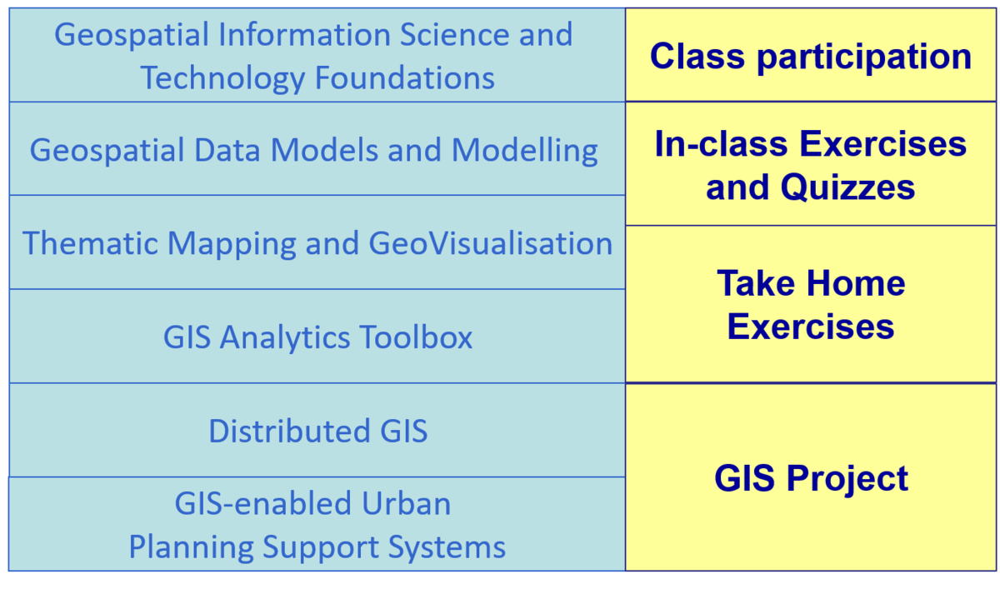

Syllabus
Synopsis
Effective planning and management of smart cities require urban planners to integrate and share data from multiple sources to the urban users so that they can be active participants in the smart city planning process. GIS with its capability to capture, manage, display, and analyse information spatially is emerging as one of the important enabling tool in smart city planning.
This course provides students with an introduction to practical applications of GIS in smart city management and planning. Emphasis will be placed on:
locating, acquiring and integrating multi-sources of data into GIS,
understand the principles and methodologies of geocoding and geo referencing ,
become familiar with geovisualisation and GIS analysis techniques, and
explore the technologies and possibilities of GIS-enabled Planning Support Systems for smart city management.
Objectives
Upon completion of the course, students will be able to:
Understand the basic concepts and theories of GIScience and trends of GIS technologies.
Create, integrate, manage geospatial data and build enterprise level geospatial database management systems.
Use appropriate GIS analysis functions to visualise and analyse urban sector data.
Model smart city processes using GIS’ advanced analytical methods.
Design and implement cutting-edge GIS-based Planning Support Systems for smart city management.
Competencies
Explain the concepts, principles and component of GIS with reference to urban planning and management.
Describing the differences between GIS and other related geospatial technologies for urban planning.
Importing, converting, transforming, integrating and managing urban geographical data.
Geocoding and georeferencing geographical data.
Describing the basic principles and concepts of geographical data visualisation and thematic mapping design.
Explaining vector-based geoprocessing methods using appropriate use cases.
Use appropriate geoprocessing and vector-based GIS analysis functions to solve real world urban analysis problems.
Explaining raster-based GIS analysis functions using appropriate use cases.
Use appropriate cartographic modelling functions to solve real world urban analysis problems.
Explaining the concepts of a Planning Support System.
Designing GIS enabled Planning Support System to answer urban planning and management related questions.
Course structure
Basic Modules
This course comprises ten integrated components as shown below:

Pre-requisites
There are no pre-requisites for the class and the class is open to all SMT students as well as non-SMT students. However, a basic understanding of the principles of urban management and planning in the context of smart city is required. Students who are new to the discipline of urban management /planning and smart cities are encouraged to do self-learning and research prior to the commencement of the course.
Naomi Carmon , and Susan S. Fainstein (2013) Policy, Planning, and People : Promoting Justice in Urban Development, University of Pennsylvania Press, USA.
Houbing Song, et. al (2017) Smart Cities : Foundations, Principles, and Applications, John Wiley & Sons, NJ. USA.
Grading Summary
The grading distribution of this course are as follows:
| Component | Weights |
|---|---|
| Class Participation | 5% |
| Hands-on Exercise | 10% |
| In-class Exercise | 15% |
| Take-home Exercise (15% + 20%) | 35% |
| GIS Project | 35% |
There will be no mid-term test or final examination for this course.
Reference
Core Readings
Jochen Albrecht (2007) Key Concepts & Techniques in GIS, SAGE Publication, London, UK.
Jonathan Campbell and MIchael Shin (2011) Essentials of Geographic Information Systems, Saylor Foundation.
Maarseveen, Martin van.; Martinez, Javier.; Flacke, Johannes. (2019) GIS in Sustainable Urban Planning and Management, CRC Press.
Additional Readings
David L. Berlyva (2002) Practical GIS Analysis, Taylor and Francis, London, UK.
C. Dana Tomlin and C Dana Tomlin (2012) GIS and Cartographic Modeling, ESRI Press, Redland, USA.